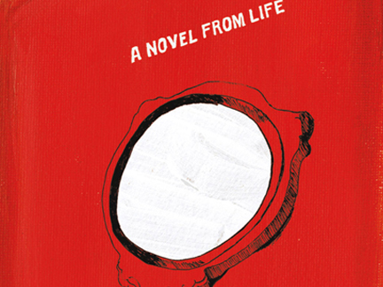

-
How Should a Person Be?
by Rachel Wetzler July 9, 2012

How Should a Person Be?
Sheila Heti.Henry Holt and Co., 2012.Writing on the French artist Sophie Calle’s True Stories (or Autobiographies), the art historian Rosalind Krauss asked, “Under what circumstances are stories true?” An ongoing project begun in 1988, True Stories is comprised of autobiographical texts narrating significant moments in Calle’s life, juxtaposed with quasi-anthropological photographs of related objects (and more recently, with the objects themselves). Drawn from the artist’s memories, fantasies, and dreams, Calle’s stories are true to the extent that she has claimed them as her own. Yet, taken as a whole, these ‘truthful’ fragments form an unwieldy composite portrait that can neither be considered wholly accurate, nor entirely fictional — a work of art is always, on some level, constructed, even if cast entirely from life.
In the recently released US version of Toronto-based writer Sheila Heti’s novel How Should a Person Be?, a revised edition of the novel she published in Canada in 2011, there is a disclaimer in small print at the bottom of the colophon:
This is a work of fiction. All of the characters, organizations, and events portrayed in this novel either are products of the author’s imagination are used fictitiously.
Billed as “a novel from life,” How Should a Person Be?’s protagonist is a recently divorced twenty-something writer named Sheila, whose biography conforms more or less exactly to that of the author. Much of the book focuses on the relationship between Sheila and her best friend, a painter named Margaux, who is likewise modeled on Heti’s real-life best friend, the painter Margaux Williamson. The majority of the characters are similarly recognizable as members of Toronto’s art and literary scenes. Large portions of the novel take the form of emails and transcripts of conversations recorded by Heti, ostensibly reproducing her own words, as well as those of Margaux and others, verbatim. That a novel consists of fictitious characters, organizations, and events would normally seem self-evident, but in How Should a Person Be? such a categorization becomes somewhat more ambiguous. Under what circumstances are stories fictional, if the people, places, and events they depict might equally be recognized as fact?
When asked about the difference between herself and the character Sheila of the novel, Heti answered: “I’m a person and not a piece of paper…A person is not a static thing, or a bunch of words.” The novel calls attention to this distinction throughout, directly addressing the tension implicit in creating a “novel from life.” Heti does not merely use her repository of recorded and transcribed material as the model for the book, but foregrounds the process of collecting it, narrating the novel’s own formation: Sheila begins taping her conversations because she is struggling to write. Commissioned by a feminist theatre company to write a play about women — a subject she professes to know nothing about — she hopes that analyzing her own real-life dialogue will provide insight into how to give her characters weight. Though the play is the pretense for her obsessive documentation, Sheila’s inquiry soon takes on a life of its own. Realizing, after a trip to Miami with Margaux for Art Basel, that her research into the lives of those around her is more interesting than the fictional people she’s been attempting to make lifelike, Sheila begins transcribing the recordings, along with her own recollections of events: “It wasn’t my play, but it felt good….I felt closer to knowing something about reality, closer to some truth.”
It seems significant that Calle’s work looms large in How Should a Person Be?’s most obvious literary precursor, Chris Kraus’s I Love Dick, a novel in which the author similarly mines her own life, leaving proper names in tact (I Love Dick also narrates its own formation). Equal parts confessional and analytical, Calle’s work seems to be the conceptual forbear for Heti’s novel. Through a practice that turns a documentary lens to the artist’s own subjective experiences, Calle’s life is not only her source material, but her medium: she documents her actions, but also acts so that she can document.
For Krauss, the structural principle guiding Calle’s work — what she calls its “technical support” — is photojournalism, a kind of forensic research into her own life, as well as the lives of those she encounters: for The Address Book (1983), Calle photocopied the contents of an address book she found on the street and reached out to the contacts listed within, inquiring about the owner’s character, interests, and routine, ultimately publishing the results of her investigation in the French newspaper Libération. Likewise, Heti cannibalizes the words of her friends, transforming those around her into subjects.
When the owner of Calle’s address book caught on to the project, he retaliated by publishing a nude photograph of her in the same newspaper, an attempt to match his own feelings of violation. In the novel, Heti’s subjects also push back against her treatment. Though they consent to being recorded — as Margaux states, “You know I have more respect for your art than I do for my own fears” — Sheila’s transformation of their friendship into an object of study is a constant source of tension: “I’m doing a lot, what with letting you tape me, but — boundaries, Sheila. Barriers. We need them. They let you love someone. Otherwise you might kill them.”
As Calle noted in an interview with Heti in The Believer, where the latter is, appropriately, the Interviews Editor, the question of truth in art is never straightforward:
The truth? Which truth? Your truth? Their truth? The truth today at two o’clock in New York, or the truth tomorrow at five o’clock in Paris? The truth now that it’s raining? What does it mean? Me, I would say things happened or didn’t happen, but I would not say that’s the truth.
This shifting definition of “truth” seems equally applicable to Heti’s novel. Though she insists upon the distinction between its characters and the actual people whose lives she borrows — a person is not a piece of paper — it is impossible to divorce the two entirely, as Heti surely understood when she chose not to assign her friend-characters new names. Heti has regularly cited the influence of reality television shows on How Should a Person Be?, particularly docudramas like MTV’s The Hills. The comparison is apt, at least on the level of form: we can say conclusively that the events depicted are real to the extent that they happened, and someone recorded it, but the final product is artificial — fiction composed from fragments of life.